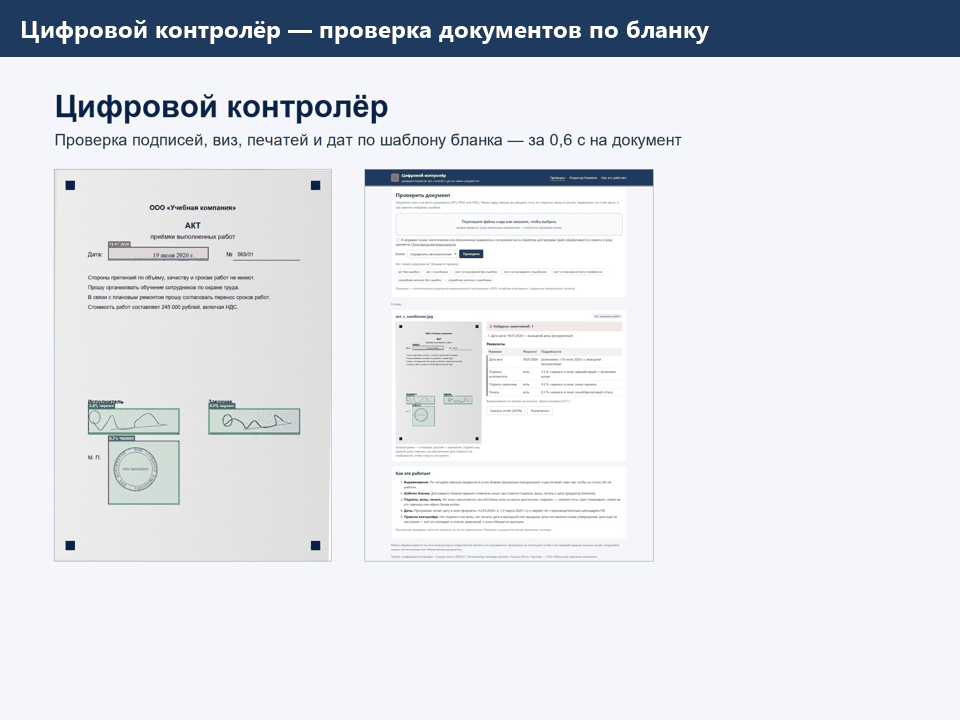
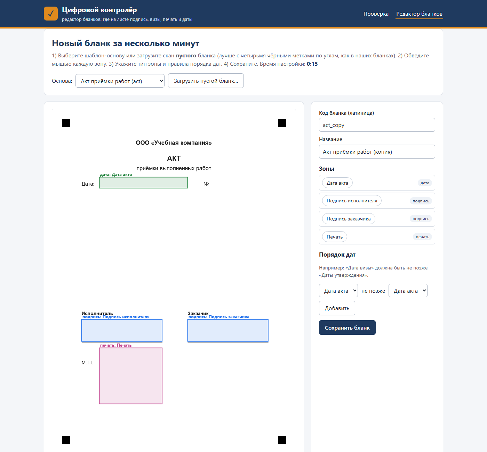
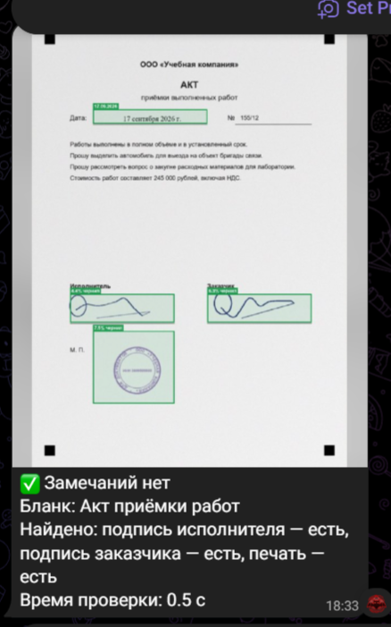

Как это выглядит

Как это работает
- Выравнивание по четырём чёрным меткам в углах листа.
- Зоны бланка: где стоят подпись, визы, печать и даты (размечаются один раз).
- Подпись, виза, печать: из зоны вычитается пустой бланк и считается доля «чернил»; печать — по синему цвету.
- Даты: чтение печатной даты, проверка выходных и праздников РФ, порядка дат и даты в будущем.
- Ответ: картинка с рамками и список замечаний — на веб-странице или в Telegram-боте.
Результаты (на синтетических документах)
200 документов: подпись, виза и печать найдены без ошибок (Precision = Recall = 1,00), даты прочитаны верно в 98,5 % случаев, около 0,6 с на документ на обычном ноутбуке.


Все документы синтетические (вымышленная организация). Эксперимент с людьми ещё не проведён; пилот выполнен без участия людей. Подлинность подписи не проверяется.
Скриншоты



Эксперимент
Онлайн-форма для добровольцев: открыть форму. Ответы не отправляются на сервер — участник скачивает файл и передаёт его организатору.
Запуск проверки
Сама проверка работает на Python на компьютере команды (веб-интерфейс и Telegram-бот), поэтому эта страница — витрина проекта. Код и инструкция — в репозитории проекта.